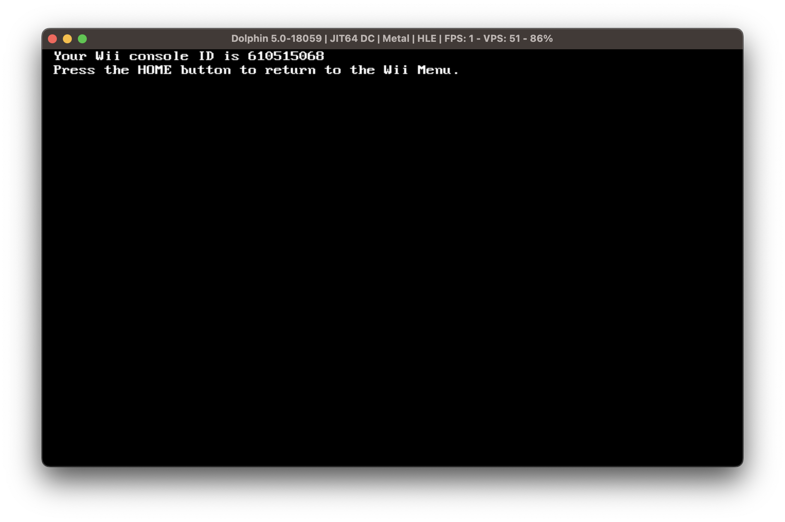
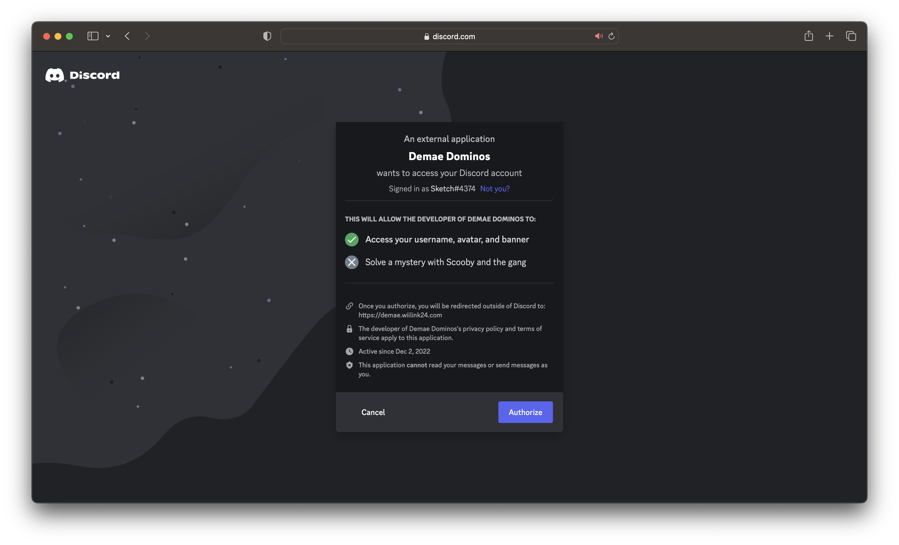
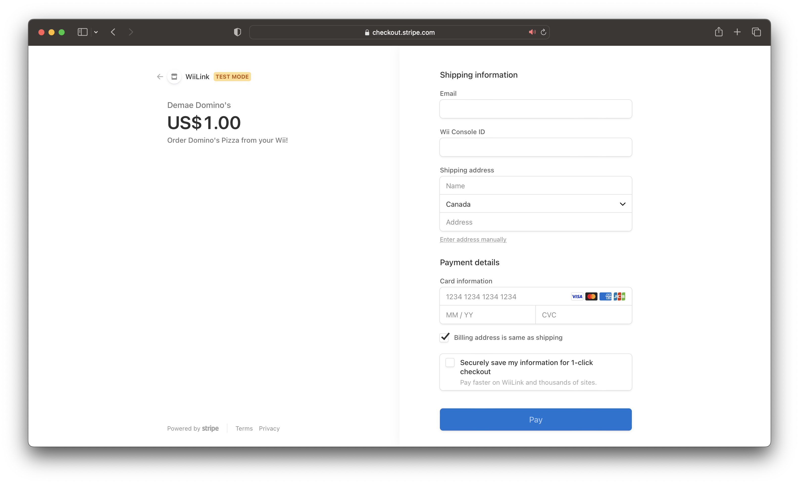
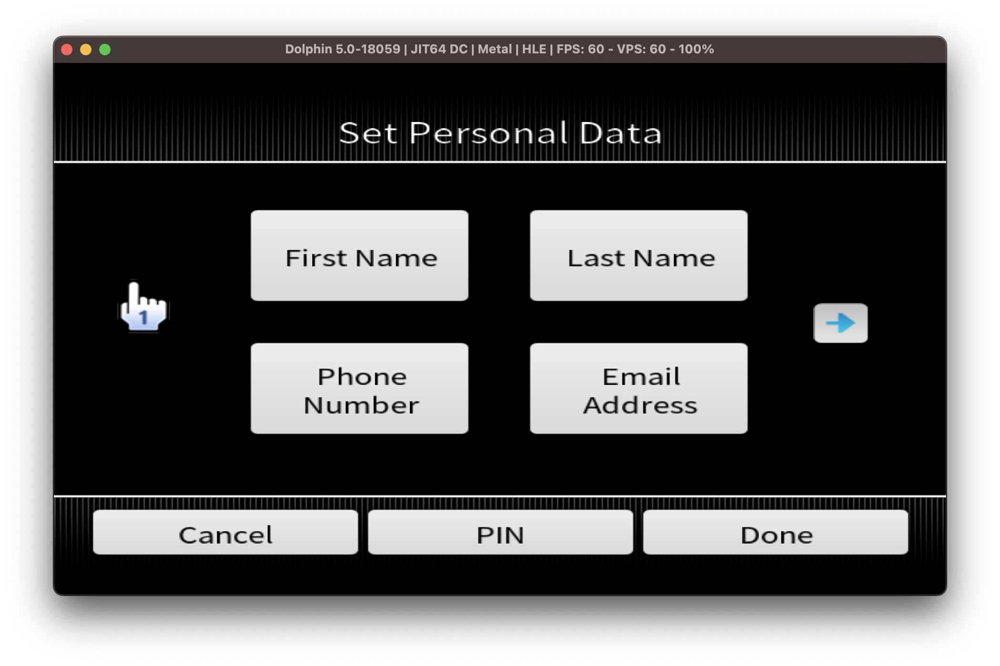
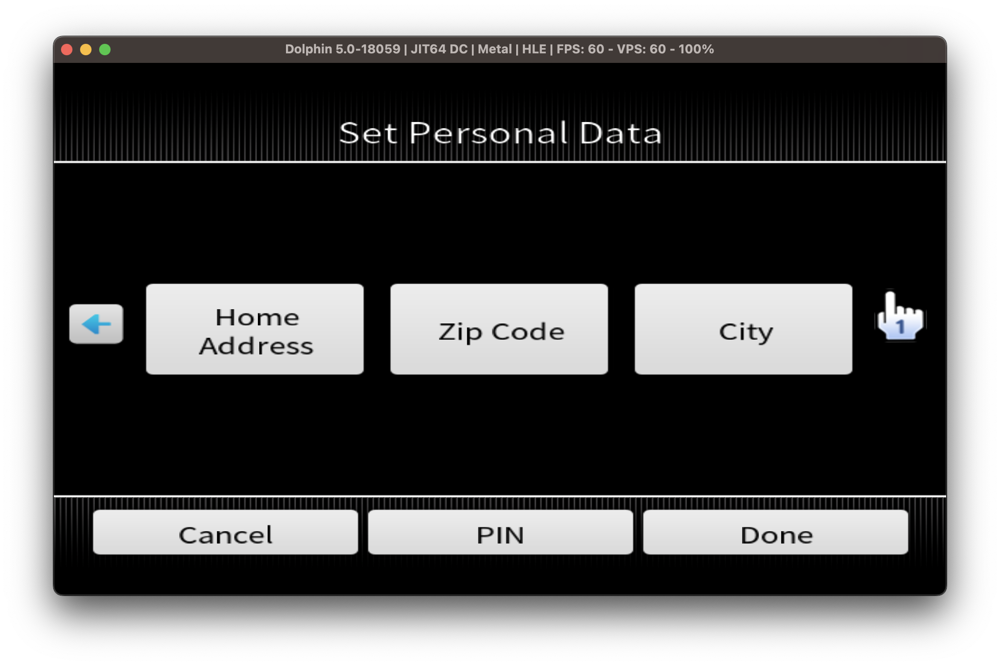
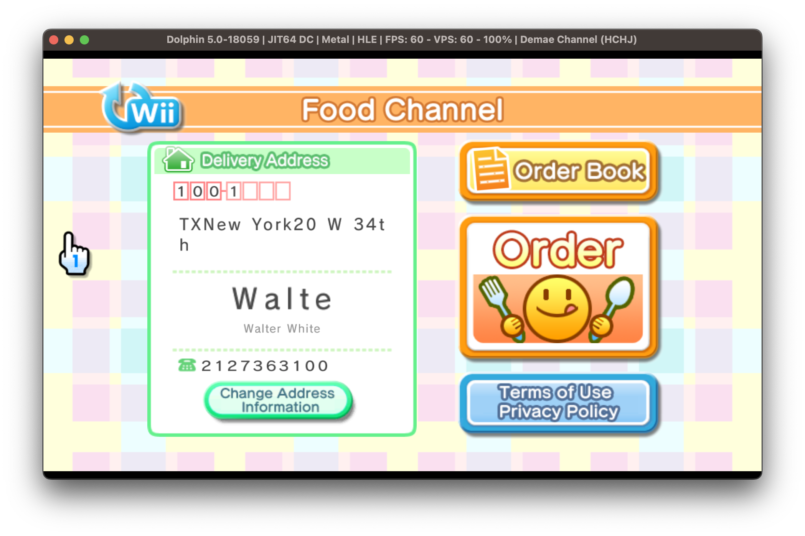
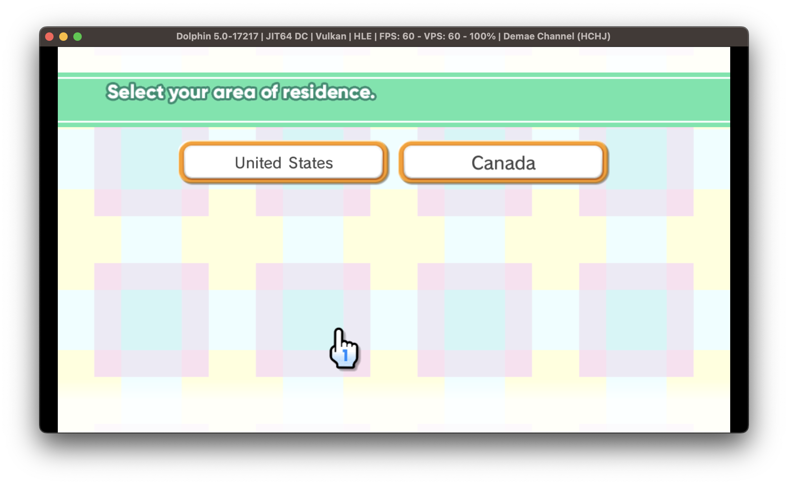
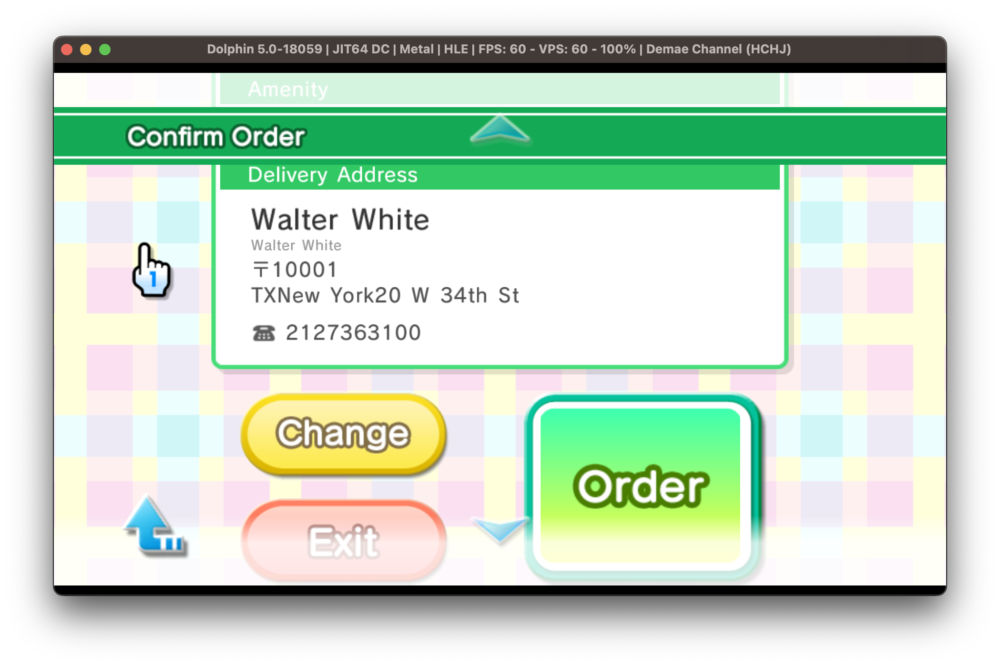

WiiLink Demae Domino’s Guide
If you need help for anything regarding this tutorial, please join the WiiLink Discord server.
In order to prevent abuse, a $1 USD paywall has been put in place. Due to this, a credit card is required. All purchases are handled by Stripe Inc. and will be refunded. Funds may take 5-10 business days to settle. For more information, read the Terms of Service and Privacy Policy.
As this service places an order to Domino’s Pizza, payment is required at the door. This is usually in the form of cash, although credit/debit card machines are possible if the delivery person has one.
Currently, only the USA and Canada are supported.
You cannot use the default Dolphin NAND with this service. You must use your own NAND dump. This can be done in Dolphin by going to the toolbar and clicking Tools -> Manage NAND -> Import BootMii NAND Backup.
What you need
- An SD card or USB drive
- A Wii with an internet connection
- A computer
- A Discord account
Instructions
Section I - Obtaining your Wii’s Console ID
- Download the Get Console ID homebrew app from the Open Shop Channel.
- Unzip the downloaded file and copy the
appsfolder to your SD Card or USB drive. - On your Wii, launch the Homebrew Channel and run the app.
- The app will output your Wii Console ID to the screen, save this for later as you will need it. 
Section II - Obtaining the Food Channel
- Click this link to visit the Demae Domino’s website.
- Click the
Log inbutton in the top right corner. This will prompt your Discord account to authorize the application.  - Click on the
Purchase Accessbutton in the top right corner. Please read the contents on screen very carefully before clicking thePurchasebutton. - You will be brought to a purchase page managed by Stripe Inc. Here you must enter your payment information along with the Wii Console ID from the last section. 
- If the purchase succeeded, you will be brought to a success page. The WAD personalized for your Wii Console will be emailed to you. Please allow for up to 10 minutes for the email to arrive.
- Once the email arrives, download the attached WAD file and move it to the
WADfolder on your SD Card or USB.
Section III - Obtaining the Set Personal Data Channel
If you are using a Japanese Wii, this step can be skipped.
If you already have the WiiLink Set Personal Data channel, you must install this one as it is updated to support addresses.
- Click the download link for your console.
- Copy the downloaded WAD file to the
WADfolder on your SD Card or USB drive.
Section IV - Installing WADs
You will now install the Food Channel and Set Personal Data channels.
- Put your SD card or USB drive in your Wii.
- Launch the Homebrew Channel on your Wii.
- Launch Wii Mod Lite.
- Using the +Control Pad on your Wii Remote, navigate to
WAD Manager, and then navigate to thewadfolder. - Highlight the Food Channel and Set Personal Data WADs by pressing the + Button over each of them. When all the WADs are selected, press A twice to install the WADs.
- After they are successfully installed, press the HOME Button to exit back to the Homebrew Channel.
Section V - Setting your personal data
WiiLink never stores your personal data. For more information on what is used, read our Privacy Policy.
You are responsible for entering correct data into the Set Personal Data channel. Failure to do so may result in orders not succeeding.
In this section you will be setting your personal data. This is required for proper usage of Demae Domino’s.
- Launch the Food Channel from the Wii Menu.
- If you have not previously used Set Personal Data, a prompt telling you to set the data will appear. Press the
Address Infobutton. Otherwise, click theChange Address Informationbutton in the main menu. - Now you are in the Set Personal Data channel. Press the arrows to traverse screens. Here you will enter your data. When you are finished, click the
Donebutton and thenDemae.  
Section VI - Placing an order
This section requires you to have cash to pay for your meal.
If you have previously placed an order, skip to step 5.
- If you have used the previous version of the Food Channel, go to
Wii Settingsto delete your save data. - Launch the Food Channel from the Wii Menu
- Follow the on-screen instructions, then click
Orderin the main menu.  - You will now be prompted to select your region. Be sure to select your residing country correctly. Failure to do so will result in restaurants failing to load. You will then be prompted to select your state/province, then city. If your city is not on the list, you can select any one as it does not matter. 
- Click the
Pizzabutton. This will load all the restaurants in your area. The first restaurant in the list is the one closest to you. - Click
See Menuto list the different menu categories. Click the category you would like, then select a food item. In the item screen, you can add toppings and adjust quantity. - After adding a food item, you will be brought to the basket. To add a food item, scroll to the bottom and select
Add Order. To proceed to checkout, clickNext. - Review your order throughly before placing the order. When you are ready, click the big green
Orderbutton.  - If no error appeared, your order was placed successfully! To track your order, simply visit the Domino’s Tracker for your region and enter the phone number you entered in Set Personal Data.
Continue to site navigation
We have many other tutorials that you might like.